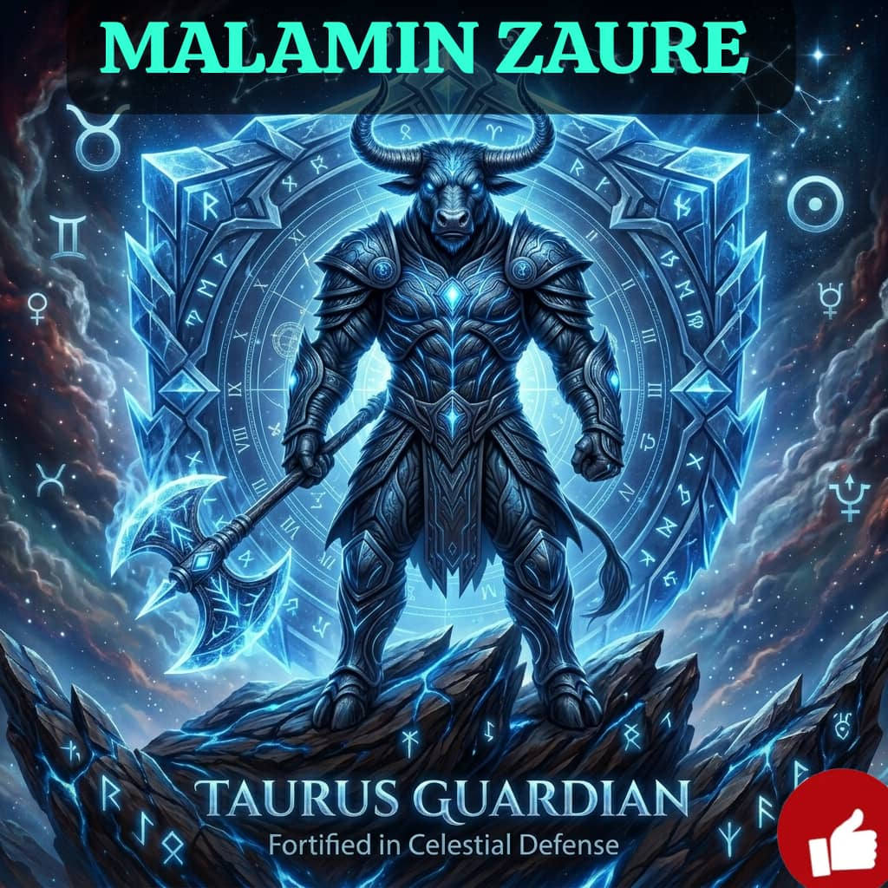

Koyi Ilimin Taurari, Ramli da Hisabi kyauta.
Sirrin Mutanen Da Aka Haifa Tsakanin 20 Ga Afrilu Zuwa 20 Ga Mayu

Alamar Sa (Bull) - Alamar Hakuri, Juriya da Arzikin Kasa
Burujin Sauru (Taurus) shine buruji na biyu a ilimin Falaki. Masu wannan burujin mutane ne masu matukar hakuri, natsuwa, rikon amana, da kuma son jin dadin rayuwa. Suna da taurin kai idan sun kafa ra'ayi, amma sune mutanen da suka fi kowa iya adana dukiya da gina arziki mai dorewa.
Dabi'ar kasa tana sa masu burujin Sauru su zama masu natsuwa, sanyin hali, da kuma lissafi kafin su yanke hukunci. Suna da alaka ta kut-da-kut da noma, filaye, da albarkar kasa.
Tauraron Zuhura shine tauraron soyayya, kyau, da jin dadin duniya. Wannan yasa masu Sauru suke son kayan kyale-kyale, abinci mai dadi, tufafi masu kyau, da kuma kwanciyar hankali.
Ranar sa'ar masu burujin Sauru ita ce ranar Juma'a.
Dalili: A ilimin taurari, ranar Juma'a tana karkashin mulkin tauraron Zuhura (Venus) ne. Duk wani asiri na neman soyayya, karbuwa, cinikin kayan kwalliya, ko fara ginin gida, in dai mai Sauru ya yi shi a ranar Juma'a zai yi tasiri fiye da tsammani.
Tunda su 'yan Turabi (Kasa) ne, kuma tauraron su yana son kyale-kyale, duk sana'ar da ta shafi kasa, gine-gine, ko abinci itace tasu. Ga guda 10 daga ciki:
Abubuwan da suka fito daga karkashin kasa (hatsi) ko abubuwa masu zaki. Misali:
Turarukan da suke kawo farin jini da nasara ga masu Sauru sune masu sanyin kamshi na furanni (Floral/Sweet):
1. Ismullahil A'azam nashi:
Ya kamata mai Sauru ya lazimci kiran Allah da sunayen nan masu kawo arziki da soyayya: "YA WADUDU, YA LATEEFU, YA GHANIYYU". Wadannan sunayen suna tafiya daidai da kaukab dinsa na Zuhura, suna jawo masa dukiya da farin jinin mutane.
💡 Shawara Mafi Muhimmanci:
Sirrin rugujewar masu Sauru shine TAURIN KAI da KASALAH (Lalaci). Basa son a matsa musu, kuma idan suka yi fushi wuyar hucewa garesu. Idan mai Sauru ya zama mai sassauci a ransa kuma ya daina jinkirta aiki (Procrastination), arziki zai biyo shi har cikin dakinsa da izinin Allah!